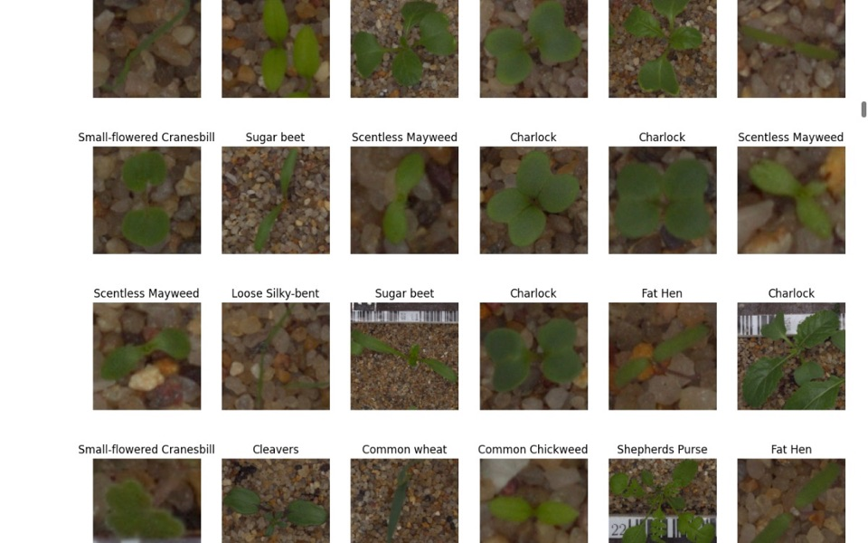
Plant Seedling Classification
Convolutional neural network that classifies seedling images into 12 species to help automate weed control.
Sample projects spanning machine learning, deep learning, dashboards, data pipelines, and full-stack web applications built with R, Python, SQL, and modern cloud tooling.
We are truly living in extraordinary times. With the first appearance of ChatGPT in November 2022 and the continual improvement of these LLMs, the productivity of the knowledge worker has been turbo-charged. The assistance of ChatGPT has dramatically improved how fast I can solve business problems using coding languages I know well such as R, Python, and SQL. But it has also allowed me to develop solutions in code I didn't know well such as web development (HTML, CSS, JavaScript, PHP, etc.).
Luckily for us humans, these LLMs can't easily produce the final solution in a single shot yet, and still often require painstaking back-and-forth effort with the LLM helper to achieve the final result. However, it will be fascinating to watch (and leverage) how AI evolves in the coming years.
End-to-end notebooks covering classical ML, deep learning, NLP, and recommender systems, plus a cloud deployment.

Convolutional neural network that classifies seedling images into 12 species to help automate weed control.
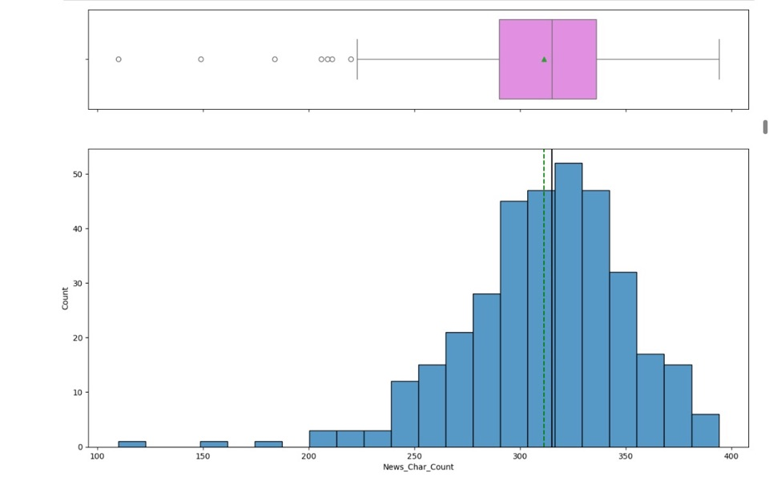
NLP pipeline that scores market news sentiment and generates summaries to support trading decisions.
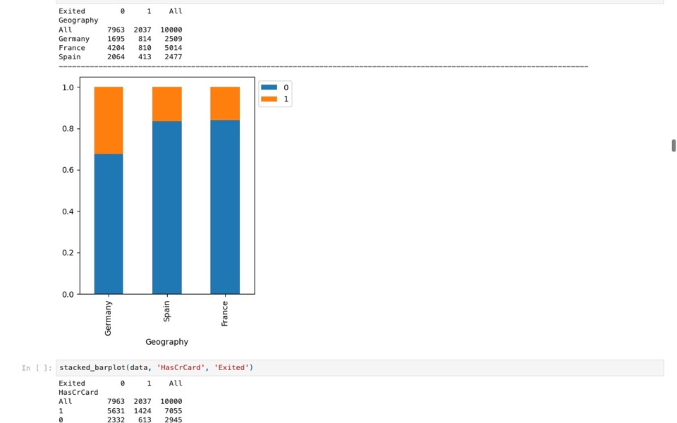
TensorFlow neural network predicting which bank customers are likely to leave, with tuning and class balancing.
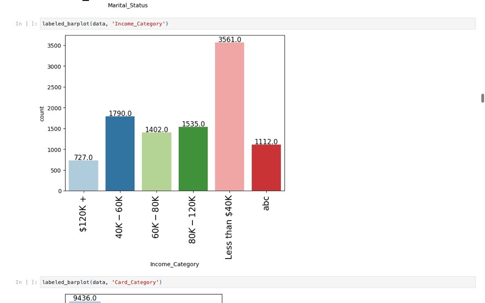
Advanced ML comparing ensemble models and oversampling strategies to predict credit card customer attrition.
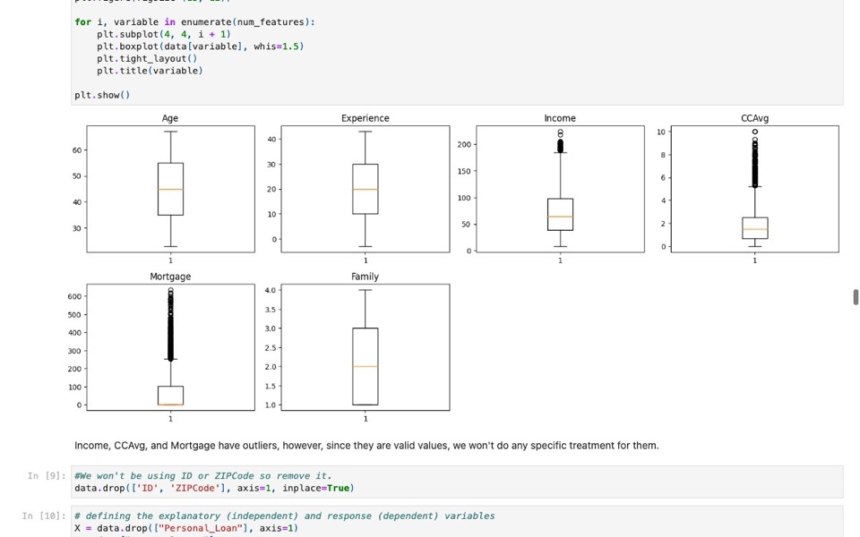
Decision tree model identifying which bank customers are most likely to accept a personal loan offer.
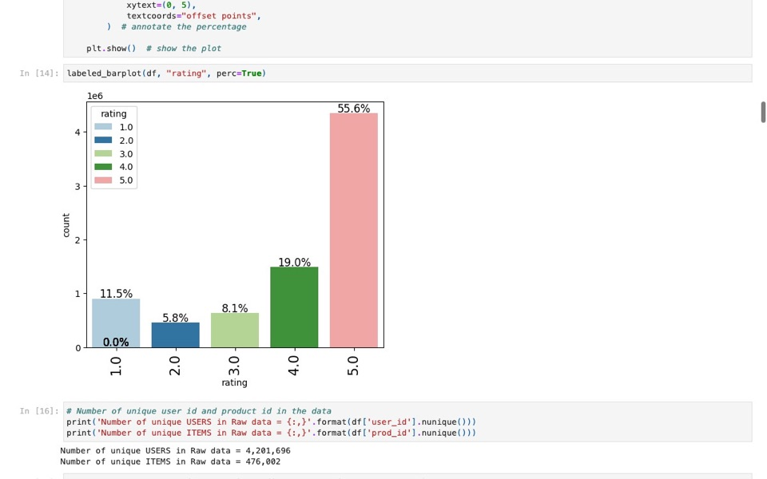
Popularity-based and collaborative filtering recommenders built on millions of product ratings.
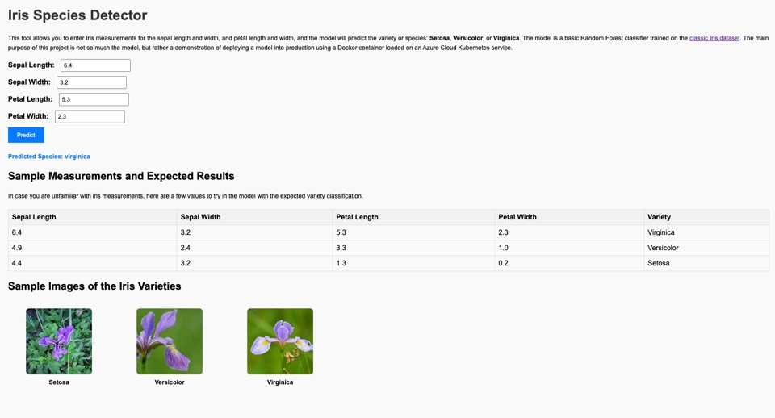
Iris classifier served with Flask, containerized with Docker, and deployed to Kubernetes on Azure.
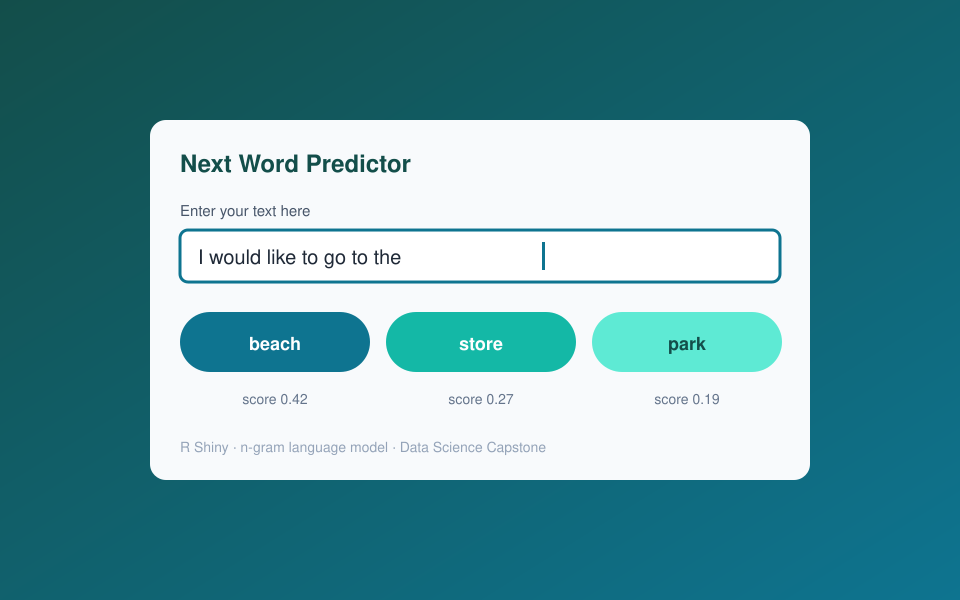
Data Science Capstone: an R Shiny app that predicts the next word from an n-gram language model.
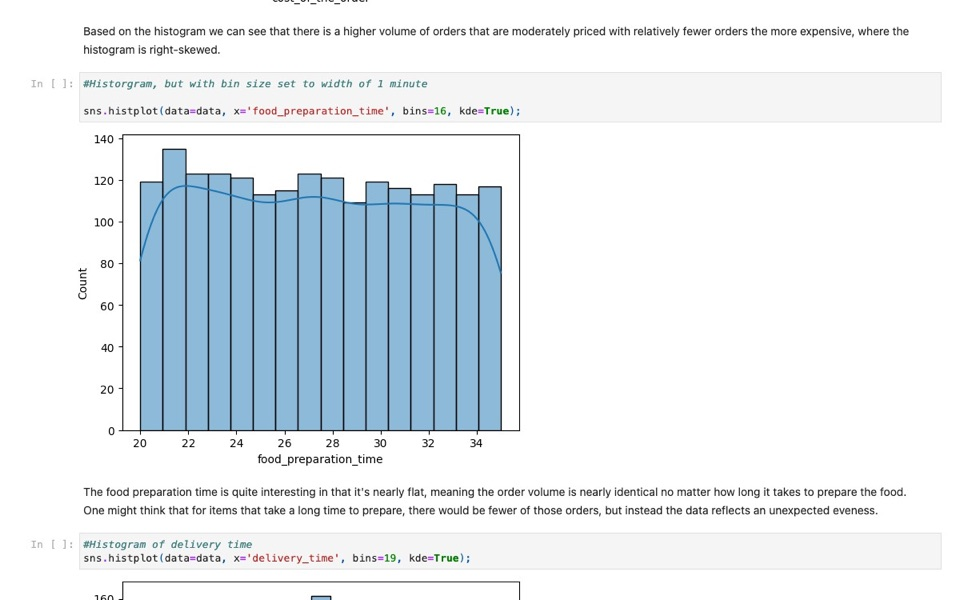
Python Foundations project: exploratory analysis of restaurant order data with pandas and seaborn.
Full-stack tools and business intelligence work.
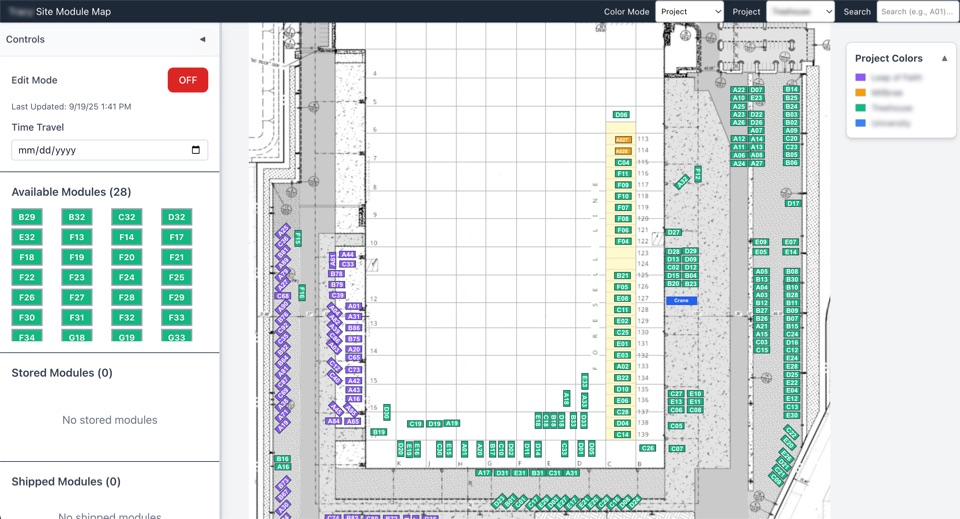
Full-stack app for tracking and dragging factory modules across site locations, with time travel and undo.
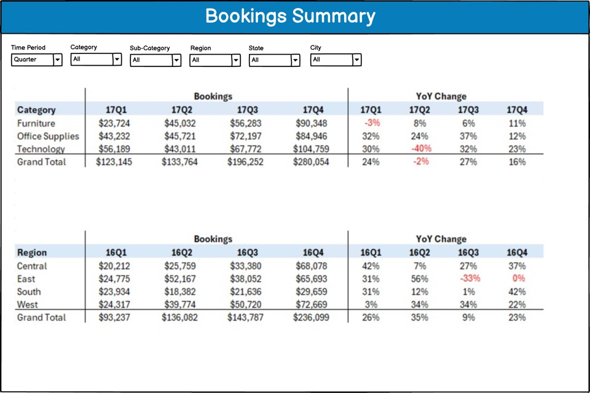
Mockups of sales bookings, forecast linearity, and pipeline dashboards built for a previous employer.
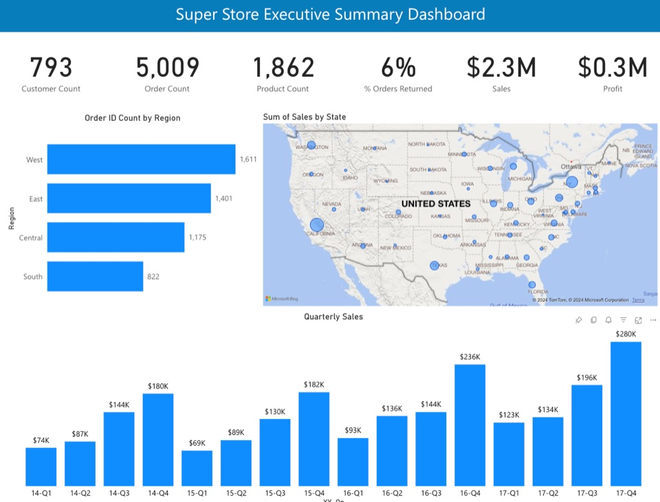
Executive summary dashboard on the Super Store dataset with a multi-table data model and DAX measures.
Self-hosted web front end on Linux and Apache for navigating Tableau Server dashboards.
Pipelines and scripts that remove manual reporting work.
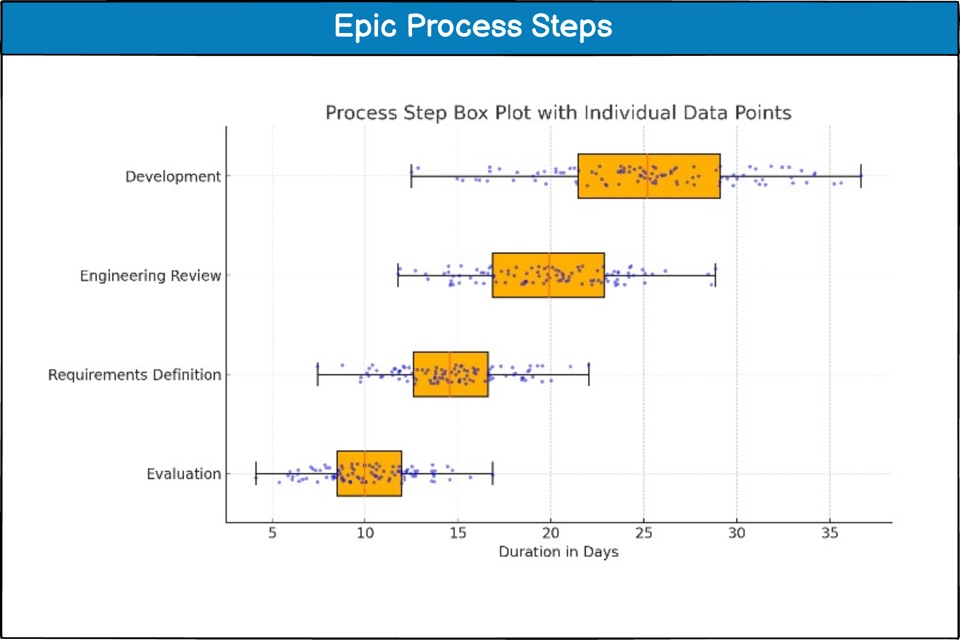
Snowflake Snowpark job that parses Jira audit logs into a view of Epic process step transitions over time.
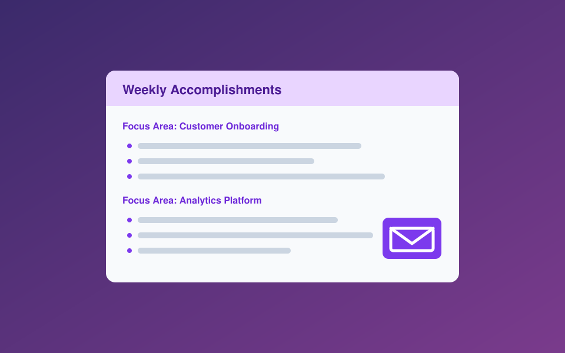
Python script that merges Jira Epic data from SharePoint and renders a formatted HTML status email.
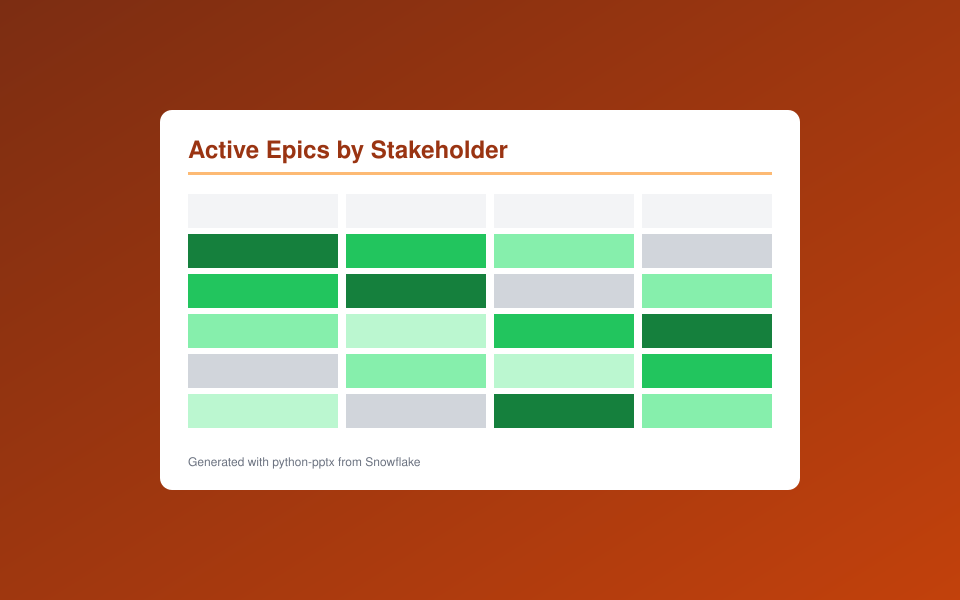
Pulls active Epics from Snowflake and builds a color-coded priority heatmap slide with python-pptx.
Written work: planning, requirements, and proposals.
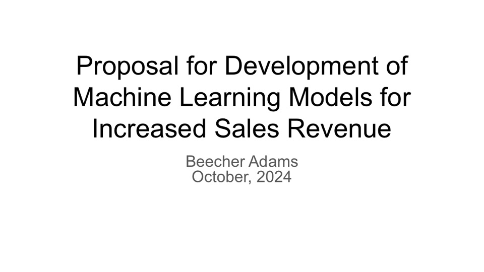
Proposal for developing machine learning models to increase sales revenue through churn and upsell analysis.
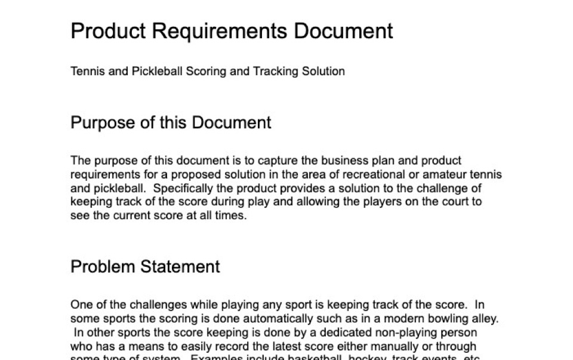
Work-in-progress product requirements document for a court-side score tracking solution.